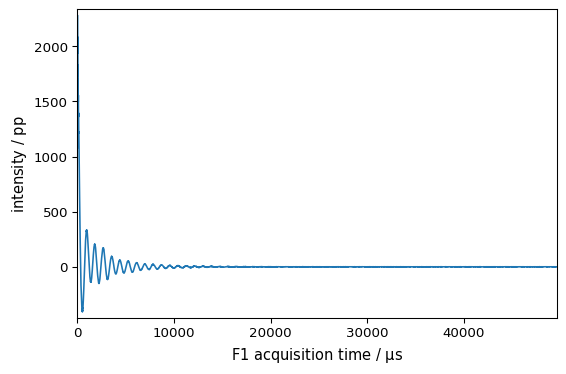

Project management
from pathlib import Path
[1]:
import spectrochempy as scp
Project creation
We can easily create a new project to store various datasets
[2]:
proj = scp.Project()
As we did not specify a name, a name has been attributed automatically:
[3]:
proj.name
[3]:
'Project-Project_862a30e4'
To get the signature of the object, one can use the usual ‘?’. Uncomment the following line to check
[4]:
# Project?
Let’s change this name
[5]:
proj.name = "myNMRdata"
proj
[5]:
(empty project)
Now we will add a dataset to the project.
First we read the dataset (here some NMR data) and we give it some name (e.g. ‘nmr n°1’).
Requires the official spectrochempy-nmr plugin. Install with: pip install spectrochempy[nmr].
[6]:
datadir = scp.pathclean(scp.preferences.datadir)
path = datadir / "nmrdata" / "bruker" / "tests" / "nmr"
nd1 = scp.nmr.read_topspin(
path / "topspin_1d", expno=1, remove_digital_filter=True, name="NMR_1D"
)
# Use the same dataset twice for the example (real projects would use different data)
nd2 = nd1.copy()
nd2.name = "NMR_1D_copy"
To add it to the project, we use the add_dataset function for a single dataset:
[7]:
proj.add_datasets(nd1)
or add_datasets for several datasets.
[8]:
proj.add_datasets(nd1, nd2)
Display its structure
[9]:
proj
[9]:
⤷ NMR_1D (dataset)
⤷ NMR_1D_copy (dataset)
It is also possible to add other projects as sub-project (using the add_project )
Remove an element from a project
[10]:
proj.remove_dataset("NMR_1D")
proj
[10]:
⤷ NMR_1D_copy (dataset)
Get project’s elements
[11]:
proj.add_datasets(nd1, nd2)
proj
[11]:
⤷ NMR_1D (dataset)
⤷ NMR_1D_copy (dataset)
We can just use the name of the element as a project attribute.
[12]:
proj.NMR_1D
[12]:
NDDataset: [complex128] pp (size: 12411)[NMR_1D]
Summary
Data
I[ -1037 -2200 ... 0.06203 -0.05273] pp
Dimension `x`
[13]:
_ = proj.NMR_1D.plot()

However, this work only if the name contains no space, dot, comma, colon, etc. The only special character allowed is the underscore _ . If the name is not respecting this, then it is possible to use the following syntax (as a project behave as a dictionary). For example:
[14]:
proj["NMR_1D"].data
[14]:
array([1.08e+03-1.04e+03j, 2.28e+03-2.2e+03j, ..., 0.234+0.062j, -0.101-0.0527j])
[15]:
proj.NMR_1D_copy
[15]:
NDDataset: [complex128] pp (size: 12411)[NMR_1D_copy]
Summary
Data
I[ -1037 -2200 ... 0.06203 -0.05273] pp
Dimension `x`
Saving and loading projects
[16]:
proj
[16]:
⤷ NMR_1D (dataset)
⤷ NMR_1D_copy (dataset)
Saving
[17]:
proj.save_as("NMR")
[17]:
PosixPath('/home/runner/work/spectrochempy/tempdirs/scp_xnzy8k_7/docs/sources/userguide/objects/project/NMR.pscp')
Loading
[18]:
proj2 = scp.Project.load("NMR")
[19]:
proj2
[19]:
⤷ NMR_1D (dataset)
⤷ NMR_1D_copy (dataset)
[20]:
_ = proj2.NMR_1D.plot()

[21]:
proj2.NMR_1D_copy
[21]:
NDDataset: [complex128] pp (size: 12411)[NMR_1D_copy]
Summary
Data
I[ -1037 -2200 ... 0.06203 -0.05273] pp
Dimension `x`
[22]:
_ = proj.NMR_1D_copy.plot()

[ ]: